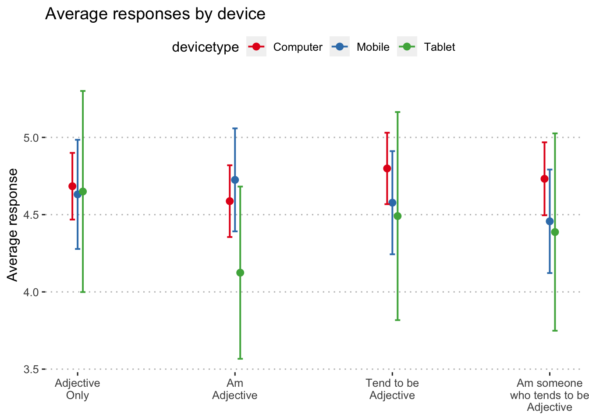

library(here) # for working with files
library(tidyverse) # for cleaning
library(janitor) # for variable names
library(lme4) # for mulitlevel modeling
library(lmerTest) # for df and p-values
library(emmeans) # for pairwise comparisons
library(sjPlot) # for figures
library(ggpubr) # for prettier plots
library(kableExtra) # for nicer tablesFirst we select the responses to the items of different formats. For this set of analyses, we use data collected in both Block 1 and Block 2 – that is, each participant saw the same format for every item during Block 1, but a random format for each item in Block 2.
These variable names have one of two formats: [trait]_[abcd] (for example, talkative_a) or [trait]_[abcd]_2 (for example, talkative_a_2). We search for these items using regular expressions.
items_seen_b1b2 = str_subset(
names(data),
"^([[:alpha:]])+_[abcd](_2)?$"
)
item_responses = data %>%
select(proid, all_of(items_seen_b1b2), devicetype)Next we reshape these data into long form.
item_responses = item_responses %>%
gather(item, response, -proid, -devicetype) %>%
mutate(
block = case_when( # which block is the item from?
str_detect(item, "_2") ~ "2",
TRUE ~ "1"),
item = str_remove(item, "_2")) %>% # remove block id from item string
separate(item, into = c("item", "format")) %>%
filter(!is.na(response))We give labels to the formats, to clarify interpretations and aid table and figure construction.
item_responses$format = as.factor(item_responses$format)
item_responses$format = relevel(item_responses$format, ref = "a")
item_responses$format = factor(item_responses$format,
levels = c("a","b","c","d"),
labels = c("Adjective\nOnly", "Am\nAdjective", "Tend to be\nAdjective", "I am someone\nwho tends to be\nAdjective"))We also prepare a dataframe to examine the amount of time needed to respond to items. These variable names have one of two formats: t_[trait]_[abcd]_page_submit (for example, t_talkative_a_page_submit) or t_[trait]_[abcd]_2_page_submit (for example, t_talkative_a_2_page_submit). We search for these items using regular expressions.
item_timing = str_subset(
names(data),
"^t_([[:alpha:]])+_[abcd]_(2_)?page_submit$"
)
item_timing = data %>%
select(proid, all_of(item_timing), devicetype)Next we reshape these data into long form.
item_timing = item_timing %>%
gather(item, seconds, -proid, -devicetype) %>%
mutate(item = str_remove(item, "^t_"),
item = str_remove(item, "_2"),
item = str_remove(item, "_page_submit$")) %>%
separate(item, into = c("item", "format")) %>%
filter(!is.na(seconds))Seconds appears to be strongly skewed, so we log-transform this variable.
item_timing = item_timing %>%
mutate(seconds_log = log(seconds))
item_timing %>%
select(contains("seconds")) %>%
gather(variable, value) %>%
mutate(variable = factor(variable,
levels = c("seconds", "seconds_log"),
labels = c("Seconds (raw)", "Log Seconds"))) %>%
ggplot(aes(x = value)) +
geom_histogram(bins = 100) +
facet_wrap(~variable, scales = "free") +
labs(x = NULL, y = "Count") +
theme_pubr()
We give labels to the formats, to clarify interpretations and aid table and figure construction.
item_timing$format = as.factor(item_timing$format)
item_timing$format = relevel(item_timing$format, ref = "a")
item_timing$format = factor(item_timing$format,
levels = c("a","b","c","d"),
labels = c("Adjective\nOnly", "Am\nAdjective", "Tend to be\nAdjective", "I am someone\nwho tends to be\nAdjective"))We used a multilevel model, nesting response within participant to account for dependence. Our primary predictor was device format
mod.response = lmer(response~devicetype + (1|proid),
data = item_responses)
anova(mod.response)## Type III Analysis of Variance Table with Satterthwaite's method
## Sum Sq Mean Sq NumDF DenDF F value Pr(>F)
## devicetype 4.008 2.004 2 32 1.1793 0.3205plot1 = plot_model(mod.response, type = "pred")
plot1$devicetype +
labs(x = NULL,
y = "Average response",
title = "Average responses by device") +
theme_pubclean()Predicted response on personality items by condition.
means_by_group = item_responses %>%
group_by(devicetype) %>%
summarise(m = mean(response),
s = sd(response))
item_responses %>%
ggplot(aes(x = response)) +
geom_histogram(aes(fill = block),
position = "dodge",
bins = 6, color = "white") +
geom_vline(aes(xintercept = m),
data = means_by_group) +
facet_wrap(~devicetype, scales = "free_y") +
#guides(fill = "none") +
scale_x_continuous(breaks = 1:6) +
labs(y = "Number of particpants",
title = "Distribution of responses by format") +
theme_pubr()Distribution of responses by category
mod.response2 = lmer(response~devicetype*format + (1|proid),
data = item_responses)
anova(mod.response2)## Type III Analysis of Variance Table with Satterthwaite's method
## Sum Sq Mean Sq NumDF DenDF F value Pr(>F)
## devicetype 2.4435 1.2217 2 33.06 0.7204 0.49405
## format 5.0203 1.6734 3 2030.62 0.9867 0.39803
## devicetype:format 18.9498 3.1583 6 2033.40 1.8622 0.08374 .
## ---
## Signif. codes: 0 '***' 0.001 '**' 0.01 '*' 0.05 '.' 0.1 ' ' 1plot2 = plot_model(mod.response2, type = "pred", terms = c("format", "devicetype"))
plot2 +
labs(x = NULL,
y = "Average response",
title = "Average responses by device") +
theme_pubclean()Predicted response on personality items by condition.
We used a multilevel model, nesting seconds within participant to account for dependence. Our primary predictor was format.
mod.timing = lmer(seconds_log~devicetype + (1|proid),
data = item_timing)
anova(mod.timing)## Type III Analysis of Variance Table with Satterthwaite's method
## Sum Sq Mean Sq NumDF DenDF F value Pr(>F)
## devicetype 2.8619 1.4309 2 32 2.0649 0.1434plot1 = plot_model(mod.timing, type = "pred")
plot1$devicetype +
labs(x = NULL,
y = "Seconds (log)",
title = "Average seconds time by device type") +
theme_pubclean()Predicted seconds on personality items by condition.
means_by_group = item_timing %>%
group_by(devicetype) %>%
summarise(m = mean(seconds),
s = sd(seconds))
item_timing %>%
ggplot(aes(x = seconds, fill = devicetype)) +
geom_histogram(bins = 100) +
geom_vline(aes(xintercept = m), data = means_by_group) +
facet_wrap(~devicetype, scales = "free_y") +
guides(fill = "none") +
scale_x_log10() +
labs(y = "Number of particpants",
title = "Distribution of seconds by format",
x = "Seconds (logrithmic scale)") +
theme_pubr()Distribution of secondss by category
mod.timing2 = lmer(seconds_log~devicetype*format + (1|proid),
data = item_timing)
anova(mod.timing2)## Type III Analysis of Variance Table with Satterthwaite's method
## Sum Sq Mean Sq NumDF DenDF F value Pr(>F)
## devicetype 3.4339 1.7170 2 32.31 2.5424 0.0943136 .
## format 12.5878 4.1959 3 2138.42 6.2132 0.0003366 ***
## devicetype:format 14.5245 2.4208 6 2142.58 3.5846 0.0015414 **
## ---
## Signif. codes: 0 '***' 0.001 '**' 0.01 '*' 0.05 '.' 0.1 ' ' 1plot1 = plot_model(mod.timing2, type = "pred", terms = c("format", "devicetype"))
plot1 +
labs(x = NULL,
y = "Seconds (log)",
title = "Average seconds time by device type") +
theme_pubclean()Predicted seconds on personality items by condition.